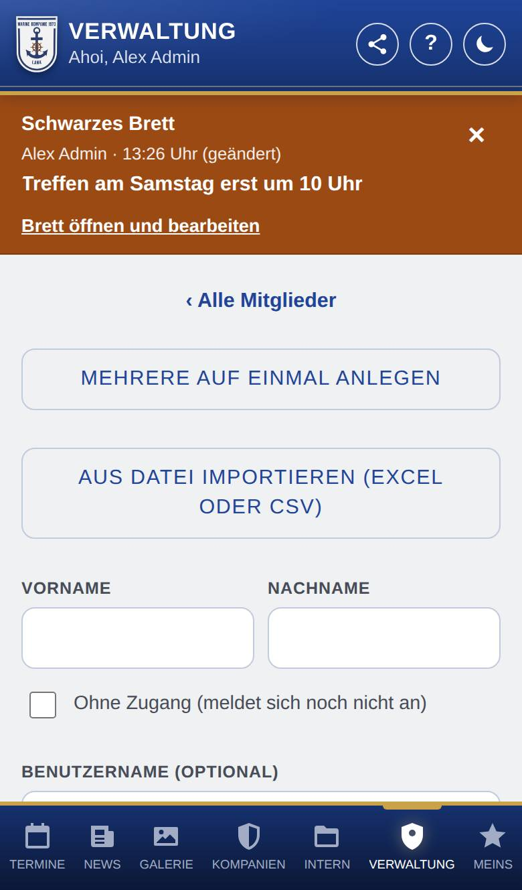
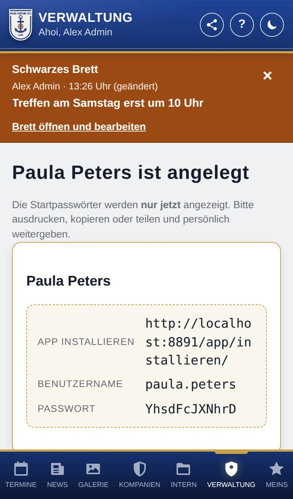

Mitglied anlegen
Hier legst du ein neues Konto für eine Person an. Die App erzeugt dabei ein Startpasswort, das du der Person persönlich weitergibst. Meldet sich die Person (noch) nicht an, legst du sie ohne Zugang an, z. B. um sie in Chroniken und bei Ämter auszuwählen.

So öffnest du die Seite
Tippe unten auf Verwaltung, dann auf Mitglieder und über der Liste auf + Mitglied anlegen.
Was du hier siehst
- ‹ Alle Mitglieder: zurück zur Liste.
- Mehrere auf einmal anlegen: eine Liste für mehrere Personen (siehe Mehrere Mitglieder anlegen).
- Aus Datei importieren (Excel oder CSV): eine bestehende Mitgliederliste übernehmen (siehe Mitglieder importieren).
- Vorname und Nachname.
- Ohne Zugang (meldet sich noch nicht an): für Personen ohne Konto (siehe unten). Dann fehlt das Feld für den Benutzernamen.
- Benutzername (optional), E-Mail (optional), Handynummer (optional) und Adresse (optional) mit Land, Straße, Nr., Adresszusatz, PLZ und Ort.
- Rolle: die Rollen, die du vergeben darfst. Darfst du Rollen vergeben, sind das alle Rollen, die du auch danach unter Konto und Rolle vergeben dürftest (z. B. Vorstand); sonst Mitglied und die Rollen, die ein Admin für neue Konten freigegeben hat (z. B. Anwärter). Gibt es nur Mitglied, fehlt die Auswahl. Admin können in der eigenständigen Version auch Admin anlegen; die App fragt dann nach.
- Zusatzrollen (optional): nur, wenn du Rollen vergeben darfst und die gewählte Rolle zur Kompanie gehört. Hake die Zusatzrollen an, die die Person gleich bekommen soll.
- Punkte (Anfangsbestand, optional) mit Stand vom und Dienstgrad (optional): nur für Mitglied und nur, wenn du auch Punkte bzw. Dienstgrade verwalten darfst. Gedacht für die Übernahme bestehender Mitglieder.
- Geburtstag (optional) mit Tag, Monat und Jahr: nur, wenn die Kompanie Geburtstage nutzt.
- Foto (optional) mit Foto auswählen.
- Mitglied anlegen: legt das Konto an.
So gehst du vor
Ein Mitglied anlegen
- Trage Vorname und Nachname ein.
- Trage, wenn gewünscht, Benutzername, E-Mail, Handynummer, Adresse, Geburtstag und die übrigen Angaben ein, und wähle mit Foto auswählen ein Foto.
- Tippe auf Mitglied anlegen.
- Die App zeigt die Zugangsdaten: den Link zum Installieren der App, Benutzername und Passwort. Tippe auf Ausdrucken (ein Zettel je Person), Zugangsdaten kopieren oder Teilen … und gib sie persönlich weiter.
- Mit Weiteres Mitglied legst du gleich das nächste an; ‹ Zur Mitgliederliste führt zurück.

Ein Mitglied ohne Zugang anlegen
So trägst du eine Person ein, die noch kein Konto hat, z. B. weil sie in einer Chronik steht, ein Amt hat oder die App nicht nutzt.
- Trage Vorname und Nachname ein.
- Setze den Haken bei Ohne Zugang (meldet sich noch nicht an).
- Trage die übrigen Angaben ein, wenn du sie hast, und tippe auf Mitglied anlegen. Es gibt kein Startpasswort.
- Die Person ist ein ganz normales Mitglied: Sie steht in der Mitgliederliste und lässt sich überall auswählen, z. B. bei Ämter. In der Mitgliederliste der Verwaltung trägt sie die Marke ohne Zugang.
- Später bekommt sie einen Zugang auf einem von zwei Wegen:
- Stellt sie selbst eine Anfrage auf einen Zugang, verbindest du die Anfrage beim Freigeben mit ihr (siehe Anfragen auf einen Zugang). Dann entsteht kein zweites Konto.
- Oder du tippst auf ihrer Seite unter Konto und Rolle auf Zugang einrichten und gibst ihr die Zugangsdaten weiter (siehe Konto und Rolle).
Gut zu wissen
- Nur der Vorname ist Pflicht; ohne Nachnamen geht es z. B. für ein Konto wie „Kassenwart“.
- Ohne Benutzernamen bildet die App ihn aus dem Namen. Ein Benutzername darf nur Buchstaben (a–z), Ziffern sowie . _ - @ enthalten. Benutzername und E-Mail dürfen nicht schon vergeben sein.
- Handynummer und Adresse prüft die App wie unter Meins → Konto, z. B. ob die Postleitzahl zum Land passt. Ist etwas ungültig, wird das Konto nicht angelegt.
- Persönliche Angaben (E-Mail-Adresse, Handynummer, Adresse, Geburtstag) trägst du beim Anlegen ein; danach sieht sie auf der Seite des Mitglieds nur, wer das Recht Persönliche Angaben sehen hat, und ändern darf sie, wer Persönliche Angaben pflegen hat. Die E-Mail-Adresse siehst du weiter unter Konto und Rolle. Tippst du dort auf die Adresse, zeigt die Karten-App den Ort: Auf Android wählst du die App aus (z. B. Google Maps oder Waze), auf iPhone und Mac öffnet sich Apple Karten, am PC Google Maps.
- Das Startpasswort steht nur dieses eine Mal da. Eine E-Mail verschickt die App nicht. Teilen … gibt es nur, wenn dein Gerät es kann.
- Rolle und Zusatzrollen lassen sich danach unter Konto und Rolle auf der Seite des Mitglieds ändern, von allen, die Rollen vergeben dürfen.
- Ist Zugang beantragen eingeschaltet, können Personen ihren Zugang auch selbst beantragen; du gibst ihn dann nur noch frei (siehe Anfragen auf einen Zugang).
- Ein Mitglied ohne Zugang bekommt keine Benachrichtigungen aufs Handy. E-Mails an alle Mitglieder bekommt es nur, wenn eine E-Mail-Adresse eingetragen ist. Eine Person, die schon ausgeschieden ist, trägst du besser als ehemalig ein (siehe Ehemalige).
- Wie die neue Person die App aufs Handy holt und sich anmeldet, steht unter App installieren und Mein Konto.
- Bitte lade ein Foto nur mit dem Einverständnis der Person hoch. Erlaubt sind JPG, PNG und WebP.